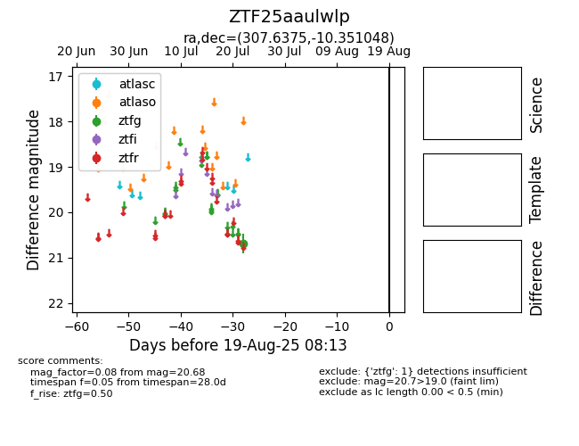

Target ZTF25aaulwlp at 2025-08-19 09:59, see:
FINK: fink-portal.org/ZTF25aaulwlp
Lasair: lasair-ztf.lsst.ac.uk/objects/ZTF25aaulwlp
ALeRCE: alerce.online/object/ZTF25aaulwlp
alt names
ZTF25aaulwlp (ztf,fink)
coordinates:
equatorial (ra, dec) = (307.6375,-10.35105)
galactic (l, b) = (34.7328,-26.67038)
photometry
last ztfg=20.68
1 ztfg detections
